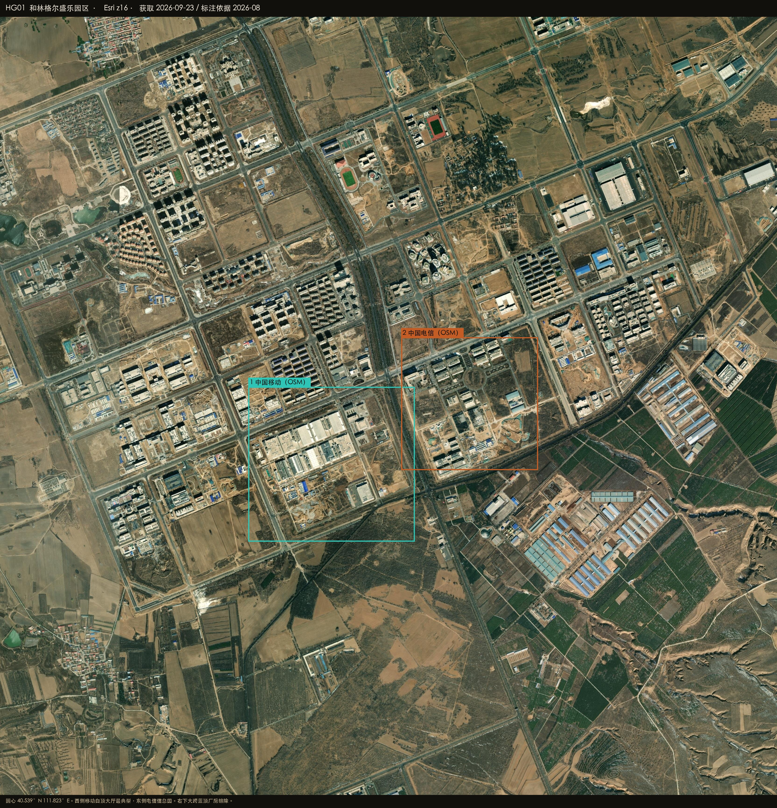
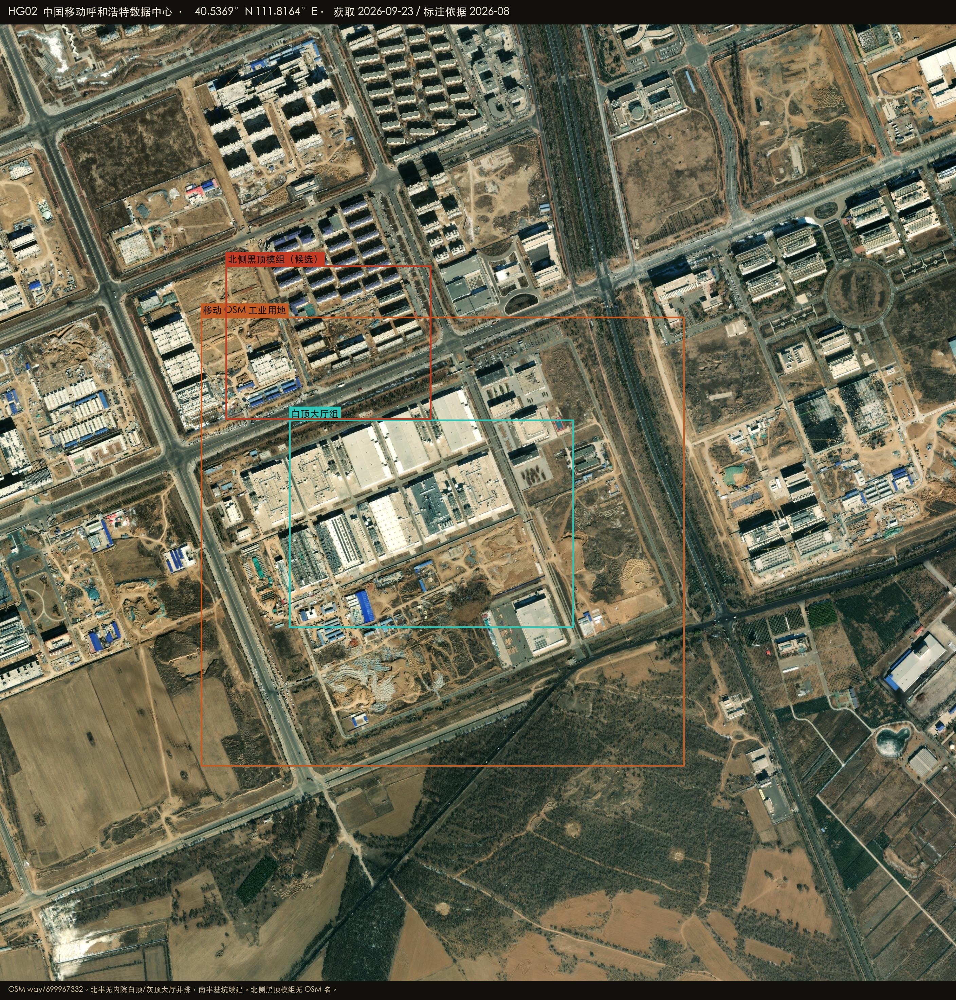
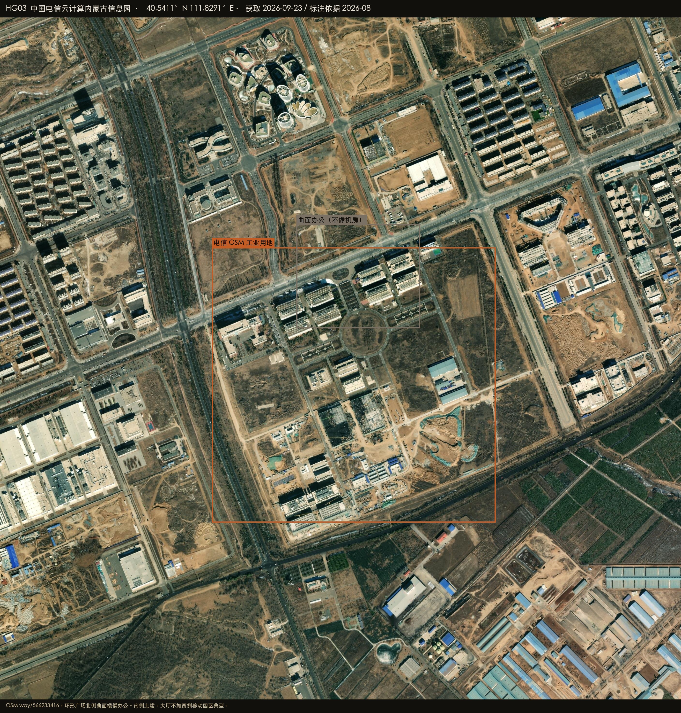

Datacenter Probe · 和林格尔
40.5390°N 111.8230°E · r = 50 km
Esri World Imagery · 2026-08-27
Satellite reconnaissance · Inner Mongolia
和林格尔周边数据中心建设情况
和林格尔是内蒙古枢纽的呼和浩特翼，机房在盛乐经济园区格子里，不在县城。西侧 OSM 中国移动呼和浩特数据中心是最典型的一处：北半无内院白顶大厅并排，南半还在挖。东侧中国电信云计算内蒙古信息园能钉园，环形广场那几栋曲面楼更像办公。华为云报道没有 OSM 名，不写入业主。

HERO · 盛乐园区 · 西移动 / 东电信
在建 / 高置信机房
已投运 / OSM 具名
候选 / 业主待核
排除或不像机房
底图 Esri World Imagery（WGS84）
HG-CMCC · 白顶大厅
OSM 具名。北半无内院大厅并排，南半基坑续建。
高置信 · 投运+在建
HG-CT · 东邻
OSM 具名。环形广场偏办公，南侧土建。
中高 · 园可钉
HG-NORTH · 候选
移动多边形北外侧模块化黑顶，无 OSM 名。
中 · 候选
排除 · 厂房
右下仓储厂房、广场曲面楼不算机房。
排除
40.5369°N 111.8164°E
中国移动呼和浩特数据中心
盛乐园区西。OSM way/699967332，40.5315–40.5423N 111.8087–111.8240E。
高置信 · 已投运 + 南扩
- 北半多栋无内院白顶/灰顶大厅，屋顶机电密布
- 南半基坑、蓝顶临建
- 北侧黑顶模组组无 OSM 名，只标候选
中国移动
在 Google 卫星图打开 ↗

PLATE HG02 · 移动 · Esri z17
40.5411°N 111.8291°E
中国电信云计算内蒙古信息园
紧贴移动东侧。OSM way/566233416，40.5365–40.5457N 111.8228–111.8353E。
中高 · 园可钉 / 楼要分
- 环形广场北侧曲面楼偏办公，不单独当机房
- 南侧仍有土建
- 大厅形态不如西侧移动园区典型
中国电信
在 Google 卫星图打开 ↗

PLATE HG03 · 电信 · 广场偏办公
怎么判，什么不算
圆心在盛乐园区，不在和林格尔县城，也不是乌兰察布。
算作机房
- 无内院白顶/灰顶大厅并排、屋顶机电
- OSM 具名 industrial（移动、电信）
明确排除
- 曲面办公楼、体育场、住宅
- 大跨蓝顶仓储厂房
- 没有 OSM 名的华为报道
在 Google 卫星图打开圆心 ↗